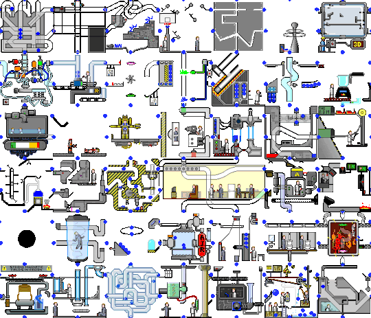

class: center, middle # How to reduce on-boarding time and make developers more productive August 21 2015 Christian Trabold [@ctrabold](https://twitter.com/ctrabold) --- class: center, middle # Make developers more productive .red.bold[*] .footnote[.red.bold[*] The short version] --- class: middle # What is 'on-boarding'? - Your first day(s) in a new company - Your first day(s) in a new project - Your first day(s) in a new team --- class: middle # How fast do you feel _comfortable_<br>in your _new_ environment? --- class: middle # Joining a new team <br>is like traveling to a foreign country - How to understand the new language? - _They are behaving different than I'm used to_ - *Exciting* vs. *Feels sometimes unconfortable* --- class: middle # CULTURE SHOCK! --- background-image: url(assets/images/what_who_where.jpg) .copyright[http://blog.internations.org/wp-content/uploads/2012/02/Fotolia_9227685_S.jpg] --- class: middle # Provide a 'Getting started' document - Add README.md files to each project - Help members to help themselves - Collect feedback from new members to improve the onboarding --- class: middle  .copyright[http://devopsreactions.tumblr.com/post/125332171991/what-the-host-masks-from-your-vps-performance] --- class: middle # Draw your organisation diagram - also good for pairing: How do you understand our organisation? --- class: middle <blockquote style="font-size: 2em"> Putting people’s work into context is important for me, and by talking over the business problem as a team, helps people understand what it is they are contributing to – Patrick Kua <a href="https://www.thekua.com/atwork/2007/05/onboarding-strategy-big-vision-business-problem/">source</a> </blockquote> --- class: middle # Reduce tasks in the beginning --- # Explain 3-letter words! They are the _foreign language_ --- class: middle # Provide a company Glossary ``` # Example Glossary TBD = To be discussed TBA = To be announced ETA = Estimated Time of Arrival TW = ThoughtWorks TWER = ThoughtWorker TWU = ThoughtWorks University ``` --- class: middle # Escalate quickly - If you are unhappy with the information you get, let your team know! - Provide contructive feedback! - Start your own 'onboarding' document when you join e.g. `README.md` and personal wiki page (blog) --- class: middle # Tools - Send preparation email _upfront_ - Set expectations _early_ - What is your role? What _not_ to do? --- class: middle # Example 'Welcome Email' Dear Name, we are thrilled to welcome you on Monday 20 8:00 AM in our office at 87 Amoy St, Singapore 069906. Follow [this link](https://goo.gl/maps/0Pe9s) for detailed directions. Your team will welcome you for breakfast around 9:00 AM! Please bring your ID and prepare one lie and two truths about you for your introduction. --- class: middle # What works well - Prepare desk & computer early - Inform IT team to setup the account (EARLY)<br> - Add date of arrival to company calendar<br> It's very common that team members are suprised when new people arrive. --- class: middle, center .copyright[http://cdn.meme.am/instances/55888268.jpg] --- class: middle # IT: Make it easy to use best-practices - Store common settings in `.profile` files - Use _Configuration management_ to automate the setup - Avoid setting up your environment over and over again (time waste) - Focus on _improving_ your on-boarding process --- class: middle # Links - [Best practises](http://www.infoq.com/articles/pat-kua-onboarding-new) - [Nice 'on-boarding' handbook](http://www.valvesoftware.com/company/Valve_Handbook_LowRes.pdf) --- class: middle # Make the first impression great! --- class: middle # Thanks!